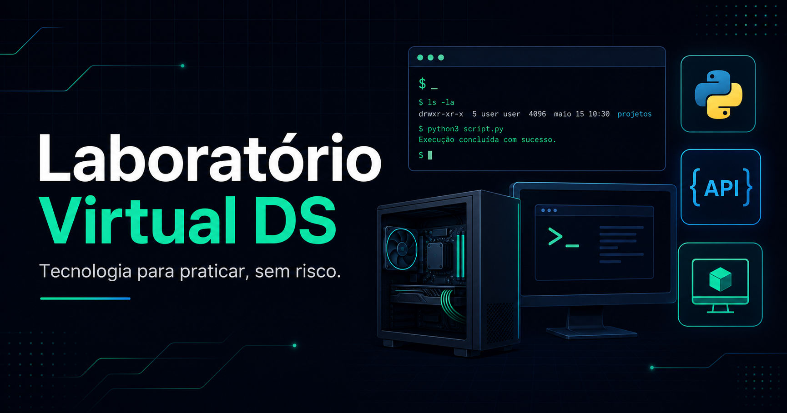

Laboratório Virtual DS
⌕
/
FERRAMENTAS DISPONÍVEIS
Escolha um laboratório
Use a busca e os filtros para encontrar a ferramenta por área, sistema ou complexidade.
Use livremente
Não há quiz, pontuação ou sequência obrigatória.
Salve localmente
Códigos, bancos, arquivos e configurações permanecem no navegador.
Exporte o trabalho
Salve sessões em TXT, PDF, formato nativo ou backup.
DADOS LOCAIS
Backup do laboratório
Exporte ou restaure os ambientes salvos neste navegador.